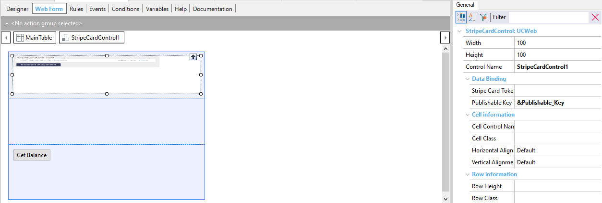

Credit card sensitive information should never be sent to your server. This is why there is a UserControl, which allows users to enter their credit card information securely, sends it directly to Stripe’s servers, and returns a card token. This token will be used when creating a charge, subscription, etc. It can only be used once, although a credit card token can be associated with a customer for later use. This User Control can be downloaded from https://marketplace.genexus.com/product.aspx?stripecardcontrol How to use Stripe Card ControlStripeCardControl has two properties:
The first one is needed for the control to charge to the correct account. You need to initialize a variable (Varchar(100)) with that key in the start event. Next, in the control properties(WebForm), under DataBinding, set the Publishable Key property to the variable you just initialized.  Now the control is linked to your Stripe account. The second property is the one that returns the token used to make a payment, create a client, etc. The User Control has an event:
which is fired when the Submit button is clicked. The payment process should be programmed using this event.
Event StripeCardControl1.SubmitPayment
&stripeChargeCreateOptions.Amount = 4500
&stripeChargeCreateOptions.Currency = "usd"
&stripeChargeCreateOptions.SourceTokenOrExistingSourceId = StripeCardControl1.StripeCardToken //Using the returned token to create charge options
&JSON = &stripeChargeCreateOptions.ToJson()
&StripeSDKMain.CreateCharge(&Api_Key,&JSON,&Response,&Errors,&ErrorCode)
if(&ErrorCode = 0)
&StripeChargeCreateResponse.FromJson(&Response)
Msg(&StripeChargeCreateResponse.ToJson())
else
&StripeError.FromJson(&Errors)
Msg(&StripeError.ToJson())
endif
EndEvent
|
| Backlinks | |
| Toc:GeneXus SDK for Stripe | Install GeneXus SDK for Stripe |